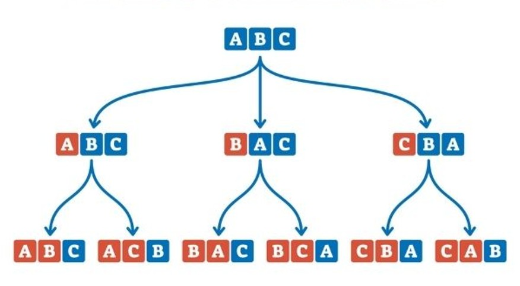

Matematica
Principi base del calcolo combinatorio
Operazioni fondamentali
Permutazioni: Sono i modi diversi di ordinare tutti gli elementi di un insieme. Se abbiamo n elementi distinti, il numero totale di permutazioni è n! (fattoriale di n), cioè il prodotto di tutti i numeri interi da 1 a n.
Permutazioni con ripetizione: Quando alcuni elementi si ripetono, il numero di permutazioni si calcola dividendo n! per il prodotto dei fattoriali delle quantità di elementi ripetuti.
Combinazioni: Sono i modi di scegliere k elementi da un insieme di n elementi, senza considerare l'ordine. Il numero di combinazioni si indica con C(n, k) ed è calcolato con la formula n! / (k! (n-k)!).
Combinazioni con ripetizione: Si usano quando si possono scegliere elementi più volte. Il numero è dato da C(n + k - 1, k).
Esempi pratici
Permutazioni semplici: Se ho 4 libri diversi e voglio disporli su uno scaffale, il numero di disposizioni è 4! = 24.
Permutazioni con ripetizione: Per la parola "ANNA": 4! / (2! × 2!) = 6 disposizioni.
Combinazioni semplici: Scegliere 3 amici da un gruppo di 5: C(5,3) = 10.
Combinazioni con ripetizione: Scegliere 3 caramelle da 5 tipi (con ripetizione): C(7,3) = 35.
Applicazioni e importanza
Il calcolo combinatorio è utilizzato in probabilità per calcolare eventi, in informatica per analizzare algoritmi, e in statistica per studiare campioni. Comprendere permutazioni e combinazioni permette di affrontare problemi complessi con metodi precisi.

Conclusione
Il calcolo combinatorio fornisce strumenti fondamentali per contare e organizzare oggetti in modo efficiente. La padronanza di questi concetti è essenziale per matematica, informatica e qualsiasi disciplina che richieda analisi di dati e possibilità.